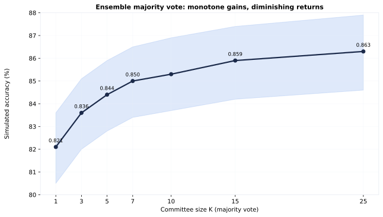

Ensemble Voting — Accuracy vs K
Committee majority-vote simulation over 1,512 images: 82.1% → 86.3% at 1×–25× cost.
- Images: 1512 (multi-observation: 945)
- Simulations: 2000 committee votes per image per K

1 Accuracy vs committee size K
| K | accuracy | 95% CI | cost multiplier |
|---|---|---|---|
| 1 | 0.821 | 0.805-0.836 | 1x |
| 3 | 0.836 | 0.820-0.851 | 3x |
| 5 | 0.844 | 0.828-0.859 | 5x |
| 7 | 0.850 | 0.834-0.865 | 7x |
| 10 | 0.853 | 0.837-0.869 | 10x |
| 15 | 0.859 | 0.842-0.874 | 15x |
| 25 | 0.863 | 0.846-0.879 | 25x |
2 Per-class accuracy by K (simulated)
| class | K = 1 | K = 3 | K = 5 | K = 7 | K = 10 | K = 15 | K = 25 |
|---|---|---|---|---|---|---|---|
| advertisement | 0.872 | 0.879 | 0.883 | 0.886 | 0.888 | 0.892 | 0.894 |
| budget | 0.648 | 0.665 | 0.675 | 0.681 | 0.685 | 0.692 | 0.699 |
| 0.933 | 0.939 | 0.942 | 0.945 | 0.947 | 0.950 | 0.952 | |
| file_folder | 0.858 | 0.872 | 0.879 | 0.883 | 0.887 | 0.892 | 0.894 |
| form | 0.849 | 0.867 | 0.877 | 0.883 | 0.887 | 0.893 | 0.897 |
| handwritten | 0.841 | 0.864 | 0.877 | 0.886 | 0.892 | 0.903 | 0.908 |
| invoice | 0.756 | 0.772 | 0.782 | 0.789 | 0.793 | 0.800 | 0.805 |
| letter | 0.742 | 0.750 | 0.754 | 0.756 | 0.757 | 0.757 | 0.757 |
| memo | 0.911 | 0.924 | 0.931 | 0.935 | 0.939 | 0.944 | 0.949 |
| news_article | 0.889 | 0.900 | 0.906 | 0.909 | 0.912 | 0.916 | 0.919 |
| presentation | 0.694 | 0.713 | 0.724 | 0.731 | 0.738 | 0.746 | 0.753 |
| questionnaire | 0.811 | 0.834 | 0.847 | 0.854 | 0.860 | 0.867 | 0.873 |
| resume | 0.926 | 0.943 | 0.953 | 0.960 | 0.963 | 0.970 | 0.975 |
| scientific_publication | 0.854 | 0.866 | 0.872 | 0.875 | 0.878 | 0.881 | 0.884 |
| scientific_report | 0.733 | 0.752 | 0.762 | 0.771 | 0.775 | 0.783 | 0.789 |
| specification | 0.832 | 0.849 | 0.857 | 0.862 | 0.866 | 0.870 | 0.873 |